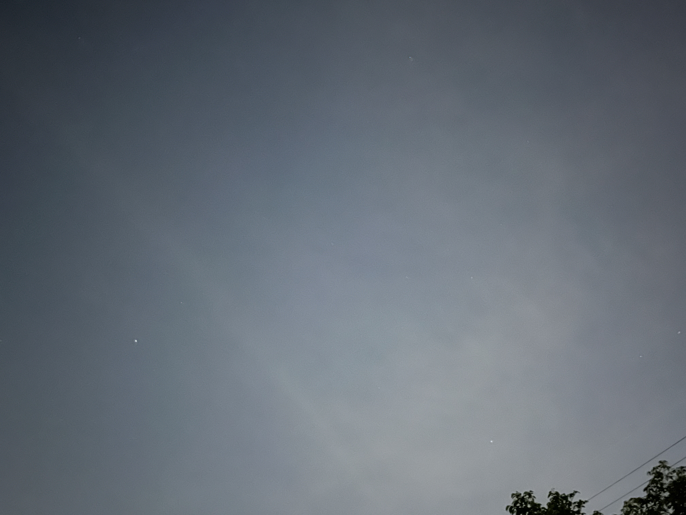
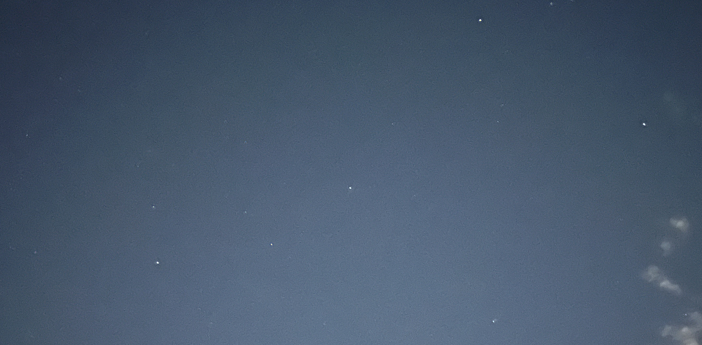
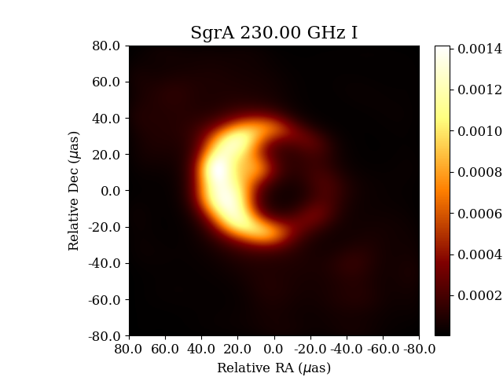

豊明ジュニア天文クラブ
現在、豊明市立栄小学校を中心に活動している小中学生向けの天文クラブです。
春の星空
春の大三角

夏の星空
夏の大三角
さそり座, いて座周辺
秋の星空
秋の四辺形

冬の星空
冬のダイヤモンド

カノープス
6月・7月の活動
星座図鑑を作ろう
七夕の夏の大三角
M13のSkyview画像

いて座A*のEHT画像

詳しくはこちら
5月の活動
宇宙科学シリーズ : 七夕のお願いはいつおりひめ星に届くか
特殊相対性理論と量子テレポーテーション
工作シリーズ : 星空を作ろう
最近のニュースから
日本人宇宙飛行士2028年に月面着陸!?
北海道・東北・北陸でもオーロラが観測される
詳しくはこちら
4月の活動
宇宙科学シリーズ : 惑星を捕まえろ
重力場中の惑星のイメージ
詳しくはこちら
主な活動内容
観望会案内・星空ガイド
近年はコロナ禍や野獣の出没などで安全な観望会を実施するのが難しくなってきています。
そのため、「安全な観望会ができる場所の確保」と「天体のデジタル画像処理」が今後重要になってくると思います。
天体に関する話題の紹介
実はどの話題も高校, 大学レベルの知識が必要で、研究者として活動するにはそれ相応の理科や数学が必要になります。
一方でこれらの考え方は身近な現象のアナロジーとして出てきたものというイメージを持って欲しいと思います。
惑星を捕まえろ(ニュートン, ガウスの重力場)
恒星の輝き(プランク,アインシュタインの量子仮説と核融合反応)
光の発生と吸収(黒体輻射, 光電効果)
蛍光灯の光と太陽の光(核融合反応)
超新星爆発(中性子星:フェルミ縮退, 重力波の発生)
空間の歪みと重力(アインシュタインの一般相対論)
光の伝わり方(マックスウェルの電磁場,等価原理,ビアンキの恒等式)
重力でゆがむ平行四辺形(リーマンの曲率テンソル)
豊明中学校にあったプラネタリウムの管理・維持
豊明市立豊明中学校に設置されていた
プラネタリウム投影機を保管しています。
愛知県では2番目に古い投影機です
豊明秋祭り出展
秋の星空と木星・土星の紹介
豊明春祭り出展
3月の1番星
街明かりのない星空画像
画像処理例
1次関数のグラフで理解する特殊相対性理論
これまでの活動はこちら